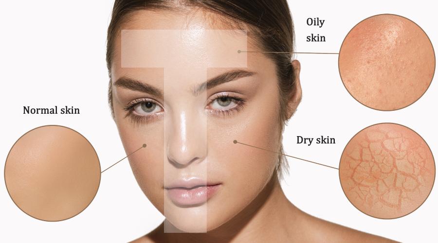

Skin Problems
Acne
For acne-prone skin, wash your face twice, avoid touching your face too often, use acne products, change your diet, drink enough water, and get enough sleep.
dry Skin
Dry, dull, sensitive skin, low sebum production, frequent washing, lack of moisture and hydration in the skin. Solution: Wash your face 1 to 2 times/day with Gentle Hydrating Cleanser, use moisturizer, drink plenty of water, avoid washing your face frequently.

Combined Skin
For combination skin, due to uneven oil glands, the product is not suitable for the T-zone. Dry weather should use Gentle Cleanser, not too oily. Sunscreen, light face mask, not freezing 1 to 2 times a week: clay mask T-zone, hydrating masks Cheeks.

Oily Skin
For those with oily skin, wash your face twice a day with a cleanser Use a toner and a light moisturizer.
Sensitive Skin
For sensitive skin, avoid washing too many times a day Try to use moisturizing products.